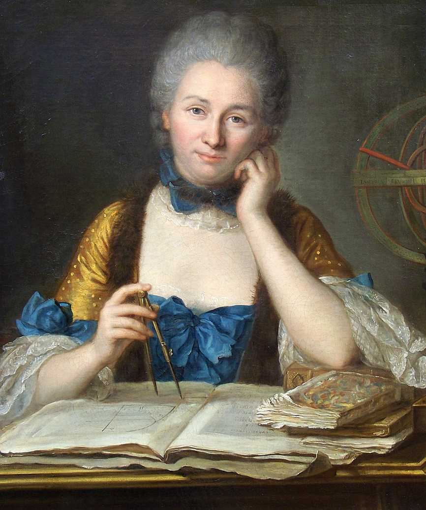

Voltaire
Seorang penulis dan filsuf

Asal usul
François-Marie Arouet (lahir 21 November 1694 – meninggal 30 Mei 1778 pada umur 83 tahun) lahir dari seorang ibu yang bernama Marie Marguerite d'Aumart dan ayah yang bernama François Arouet, lebih dikenal dengan nama penanya Voltaire, adalah penulis dan filsuf Prancis pada Era Pencerahan. Voltaire dikenal tulisan filsafatnya yang tajam, dukungan terhadap hak-hak manusia dan kebebasan sipil, termasuk kebebasan beragama dan hak mendapatkan pengadilan yang patut.
Ia adalah pendukung vokal terhadap reformasi sosial walaupun Prancis saat itu menerapkan aturan sensor ketat dan ancaman hukuman yang keras bagi pelanggarnya. Ia sering menggunakan karyanya untuk mengkritik dogma gereja dan institusi Prancis pada saat itu. Meskipun Voltaire dianggap sebagai salah satu tokoh yang paling berpengaruh pada zamannya, sebenarnya ia tidak mendirikan atau mengungkapkan suatu pemikiran filsafat apapun yang berbeda dari filsuf-filsuf sezamannya. Ia hanyalah juru bicara zaman Pencerahan lewat tulisan-tulisannya yang terpublikasi dengan baik dan mendapatkan sambutan serta pengakuan luas dari masyarakat.
perjalanan hidup
Voltaire itu sebetulnya nama samaran. Nama yang diberikan bapaknya ketika dia diseret keluar oleh bidan adalah Francois Marie Arouet. Siapa pun panggilannya, yang jelas dia tokoh terkemuka pembaharu Perancis. Fungsinya tidak cuma dwi, tetapi jauh lebih banyak dari itu: penyair, penulis drama, penulis esai, penulis cerita pendek, ahli sejarah, dan filosof. Dia betul-betul juru bicaranya pemikiran bebas liberal.
Voltaire lahir tahun 1694 di Paris dari keluarga menengah, dan ayahnya seorang ahli hukum. Di masa mudanya Voltaire belajar di perguruan Jesuit Louis-le-Grand di Paris. Selepas itu dia belajar ilmu hukum sebentar tetapi kemudian ditinggalkannya. Selaku remaja di Paris dia dikenal cerdas, pandai humor tingkat tinggi dan tersembur dari mulutnya kalimat-kalimat satire. Di bawah ancient regime alias pemerintahan lama, tingkah laku macam itu bisa mengundang bahaya. Dan betul saja! Karena ucapan-ucapannya yang mengandung politik dia ditahan "diamankan" di penjara Bastille. Hampir setahun penuh dia meringkuk di situ. Tetapi dia tidak sebodoh pemerintah yang menjebloskannya. Dia bukannya bengong-bengong seperti orang bego, tetapi disibukkannya dirinya dengan menulis sajak-sajak kepahlawanan Henriade yang kemudian dapat penghormatan tinggi. Tahun 1718, tak lama sesudah Voltaire menghirup udara bebas, drama Oedipe-nya diprodusir di Paris dan merebut sukses besar. Di umur dua puluh empat tahun Voltaire sudah jadi orang termasyhur, dan dalam sisa enam puluh tahun hidupnya dia betul-betul jadi jagonya kesusasteraan Perancis.
Voltaire punya kepintaran ganda yang langka: pintar dalam hubungan uang dan pintar dalam hubungan ucapan. Tak heran jika setingkat demi setingkat dia menjadi seorang yang hidup bebas dengan kantong penuh uang. Tetapi tahun 1726 dia dapat kesulitan. Voltaire sudah menempatkan dirinya selaku orang yang cerdas dan brilian dalam adu pendapat, bukan saja menurut ukuran jamannya tetapi mungkin untuk ukuran sepanjang jaman. Tetapi, dia kurang supel dan rendah hati yang oleh kalangan aristokrat Perancis dianggap suatu persyaratan yang mesti dipunyai oleh seorang kebanyakan seperti dia. Hal ini menyebabkan pertentangan antara Voltaire dengan kaum aristokrat, khususnya Chevalier de Rohan yang dikalahkan oleh kecerdasan Voltaire dalam adu kata. Selang beberapa lama, Chevalier mengupah tukang-tukang pukul mempermak Voltaire dan menjebloskannya lagi kedalam penjara Bastille. Voltaire dibebaskan dari situ dengan syarat dia mesti meninggalkan Perancis. Karena itu dia berkeputusan menyeberang ke Inggris dan tinggal di sana selama dua setengah tahun.
Tinggalnya dia di Inggris rupanya merupakan titik balik dalam kehidupan Voltaire. Dia belajar bercakap dan menulis dalam bahasa Inggris dan karenanya menjadi terbiasa dengan karya-karya besar orang Inggris masyhur seperti John Locke, Francis Bacon, Isaac Newton dan William Shakespeare. Dia juga berkenalan secara pribadi dengan sebagian besar cerdik cendikiawan Inggris masa itu. Voltaire amat terkesan dengan Shakespeare dan ilmu pengetahuan Inggris serta empirisme, faham yang berpegang pada perlunya ada percobaan secara praktek dan bukannya berpegang pada teori melulu. Tetapi, dari semuanya itu yang paling mengesankannya adalah sistem politik Inggris. Demokrasi Inggris dan kebebasan pribadi memberi kesan yang amat berlawanan dengan apa yang Voltaire saksikan di Perancis. Tak ada bangsawan Inggris bisa mengeluarkan letre de cachet yang dapat menjebloskan Voltaire ke dalam bui. Sebab, kalau toh dia ditangkap secara semena-mena, perintah pembebasan segera diperolehnya.
Tatkala Voltaire kembali ke Perancis, dia menulis karya falsafahnya yang pertama Lettres philosophiques yang lazimnya disebut Letters on the English. Buku itu yang diterbitkan tahun 1734 merupakan tanda sesungguhnya dari era pembaharuan Perancis. Dalam Letters on the English, Voltaire menyuguhkan gambaran umum yang menyenangkan tentang sistem politik Inggris berikut pikiran-pikiran John Locke dan pemikir-pemikir Inggris lainnya. Penerbitan buku itu membikin berang para penguasa Perancis dan sekali lagi Voltaire dipaksa angkat kaki dari Paris.
Voltaire menghabiskan waktu lima belas tahun di Cirey, sebuah kota di sebelah utara Perancis. Di sana dia menjadi kekasih Madame du Chatelet, istri seorang marquis (bangsawan). Nyonya ini cerdas dan berpendidikan. Tahun 1750, setahun sesudah sang nyonya meninggal dunia, Voltaire pergi ke Jerman atas undangan pribadi Frederick yang Agung dari Prusia. Voltaire menetap tiga tahun di kediaman Frederick di Potsdam. Mulanya dia cocok dengan Frederick yang intelektual dan brilian itu tetapi tahun 1753 mereka bertengkar dan Voltaire meninggalkan Jerman.
Sesudah meninggalkan Jerman Voltaire menetap di sebuah perkebunan dekat Jenewa. Di situ dia bisa aman baik dari gangguan Perancis maupun raja-raja Prusia. Tetapi, pandangannya yang liberal membuat bahkan Swiss tidak aman lagi baginya. Tahun 1758 pindahlah ia ke suatu perkebunan baru di Ferney, terletak di dekat perbatasan Perancis-Swis, sehingga memudahkan ia lari ke sana atau ke sini andaikata ada kesulitan dengan pihak penguasa. Di situ dia tinggal selama dua puluh tahun, membenamkan diri dalam karya kesusasteraan dan falsafah, bersurat-suratan dengan pemimpin-pemimpin intelektual di seluruh Eropa dan menerima tamu-tamunya.
Sepanjang tahun-tahun itu, karya sastra Voltaire mengalir terus tak henti-hentinya. Dia betul-betul seorang penulis dengan gaya fantastis, mungkin penulis yang paling banyak bukunya dalam daftar buku ini. Semua bilang, kumpulan tulisannya melebihi 30.000 halaman. Ini termasuk sajak kepahlawanan, lirik, surat-surat pribadi, pamflet, novel, cerpen, drama, dan buku-buku serius tentang sejarah dan falsafah.
Voltaire senantiasa punya kepercayaan teguh terhadap toleransi beragama. Tatkala usianya menginjak 60-an, terjadi sejumlah peristiwa yang mendirikan bulu roma perihal pengejaran dan pelabrakan terhadap orang-orang Protestan di Perancis. Tergugah dan marah besar, Voltaire mengabdikan dirinya ke dalam "jihad intelektual " melawan fanatisme agama. Kesemua surat-suratnya senantiasa ditutupnya dengan kalimat "Ecrasez l'infame" yang maknanya "Ganyang barang brengsek itu!" Yang dimaksud Voltaire "barang brengsek" adalah kejumudan dan fanatisme.
Tahun 1778, ketika umurnya sudah masuk delapan puluh tiga tahun, Voltaire kembali ke Paris, menyaksikan drama barunya Irene. Publik berjubel meneriakinya "Hidup jago tua! Hidup biangnya pembaharuan Perancis!" Beribu pengagum, termasuk Benjamin Franklin, menjenguknya. Tetapi, umur Voltaire sudah sampai di tepi, Dia meninggal di Paris tanggal 30 Mei 1778. Akibat sikap anti gerejanya, dia tidak peroleh penguburan secara Kristen. Tetapi, tiga belas tahun kemudian, kaum revolusioner Perancis yang telah merebut kemenangan menggali makamnya kembali dan menguburnya di Pantheon Paris.
Karya tulis Voltaire begitu amat banyaknya sehingga sulit membuat seluruh daftarnya di sini meskipun yang kakap-kakapnya saja dalam artikel yang begini singkat. Meskipun begitu banyak karya tulisnya, yang lebih penting sebetulnya gagasan pokok yang dikemukakannya selama hidupnya. Salah satu pendiriannya yang tergigih adalah mutlaknya terjamin kebebasan bicara dan kebebasan pers. Kalimat masyhur yang sering dihubungkan dengan Voltaire adalah yang berbunyi "Saya tidak setuju apa yang kau bilang, tetapi akan saya bela mati-matian hakmu untuk mengucapkan itu." Meskipun mungkin saja Voltaire tidak pernah berucap sepersis itu, tetapi yang jelas kalimat itu benar-benar mencerminkan sikap Voltaire yang sebenarnya.
Prinsip Voltaire lainnya ialah, kepercayaannya akan kebebasan beragama. Seluruh kariernya, dia dengan tak tergoyahkan menentang ketidaktoleransian agama serta penghukuman yang berkaitan dengan soal-soal agama. Meskipun Voltaire percaya adanya Tuhan, dia dengan tegas menentang sebagian besar dogma-dogma agama dan dengan mantapnya dia mengatakan bahwa organisasi berdasar keagaman pada dasarnya suatu penipuan.
Adalah sangat wajar bilamana Voltaire tak pernah percaya bahwa gelar-gelar keningratan Perancis dengan sendirinya menjamin kelebihan-kelebihan mutu, dan pada dasarnya tiap orang sebenarnya mafhum bahwa apa yang disebut "hak-hak suci Raja" itu sebenarnya omong kosong belaka. Dan kendati Voltaire sendiri jauh dari potongan seorang demokrat modern (dia condong menyetujui suatu bentuk kerajaan yang kuat tetapi mengalami pembaharuan-pembaharuan), dorongan pokok gagasannya jelas menentang setiap kekuasaan yang diperoleh berdasarkan garis keturunan. Karena itu tidaklah mengherankan jika sebagian terbesar pengikutnya berpihak pada demokrasi. Gagasan politik dan agamanya dengan demikian sejalan dengan faham pembaharuan Perancis, dan merupakan sumbangan penting sehingga meletusnya Revolusi Perancis tahun 1789.
Voltaire bukanlah seorang ahli ilmu pengetahuan, tetapi dia menaruh minat besar terhadap ilmu dan pendukung gigih sikap pandangan empiris dari John Locke dan Francis Bacon. Dia juga seorang ahli sejarah yang serius dan berkemampuan. Salah satu karyanya yang terpenting ialah buku yang menyangkut sejarah dunia Essay on the Manners and Spirit of Nations. Buku ini berbeda dengan umumnya uraian sejarah yang pernah ada sebelumnya dalam dua segi: Pertama, Voltaire mengakui bahwa Eropa hanyalah merupakan bagian kecil dari dunia secara keseluruhan, karena itu dia menitikberatkan sebagian dari pengamatannya pada sejarah Asia. Kedua, Voltaire menganggap bahwa sejarah kebudayaan adalah --pada umumnya-- jauh lebih penting daripada sejarah politik. Bukunya dengan sendirinya lebih berkaitan dengan kondisi sosial ekonomi dan perkembangan seni ketimbang soal raja-raja dengan segala rupa peperangannya.
Voltaire bukanlah mendekati filosof orisinal seperti beberapa tokoh yang ada dalam daftar buku ini. Sampai batas tertentu dia bertolak dari pandangan orang lain seperti John Locke dan Francis Bacon, memperkuat pendapat mereka atau mempopulerkan mereka. Melalui tulisan-tulisan Voltaire-lah, lebih dari siapa pun juga, ide demokrasi, toleransi agama dan kebebasan intelektual berkembang di seluruh Eropa. Meskipun ada penulis-penulis penting lain (Diderot, d'Alembert, Rousseau, Montesquieu dan lain-lain) dalam masa pembaharuan Perancis, Voltaire lebih layak dianggap pemuka dari kesemuanya itu. Dia pemimpin terkemuka dari gerakan itu. Pertama, gaya sastranya yangmenggigit, kariernya yang panjang, dan tulisannya yang begitu banyak menggaet pengikut yang tak tertandingkan oleh penulis-penulis yang mana pun juga. Kedua, gagasan-gagasannya sepenuhnya bercirikan pembaharuan. Ketiga, Voltaire mendahului tokoh-tokoh penting lain dari sudut waktu. Karya besar Montesquieu The Spirit of Law baru terbit tahun 1748; jilid pertama Encyclopedie yang masyhur itu baru terbit tahun 1751; esei Rousseau pertama ditulis tahun 1750. Sedangkan Letters on the English-nya Voltaire sudah muncul tahun 1734 dan dia sudah kesohor enam belas tahun sebelum buku itu keluar.
Tulisan-tulisan Voltaire dengan kekecualian novel pendek Candide sedikit sekali dibaca orang sekarang. Kesemua buku-bukunya tersebar dan terbaca luas selama abad ke-18, karena itu Voltaire pegang peranan penting mengubah iklim pendapat umum yang ujung-ujungnya berpuncak pada meletusnya Revolusi Perancis. Dan pengaruhnya tidaklah cuma terbatas di Perancis: orang-orang Amerika seperti Thomas Jefferson, James Madison dan Benjamin Franklin juga kenal baik dengan tulisan-tulisannya.
Adalah menarik membandingkan Voltaire dengan teman sejamannya yang masyhur Jean-Jacques Rousseau. Voltaire yang segenap pandangannya rasional. lebih berpengaruh. Sebaliknya, Rousseau lebih orisinal dan karyanya lebih berpengaruh di jaman sekarang ini.
My Photos

Tempat belajar voltaire (Jesuit Louis-le-Grand)
Kekasih voltaire (Madame du Chatelet)